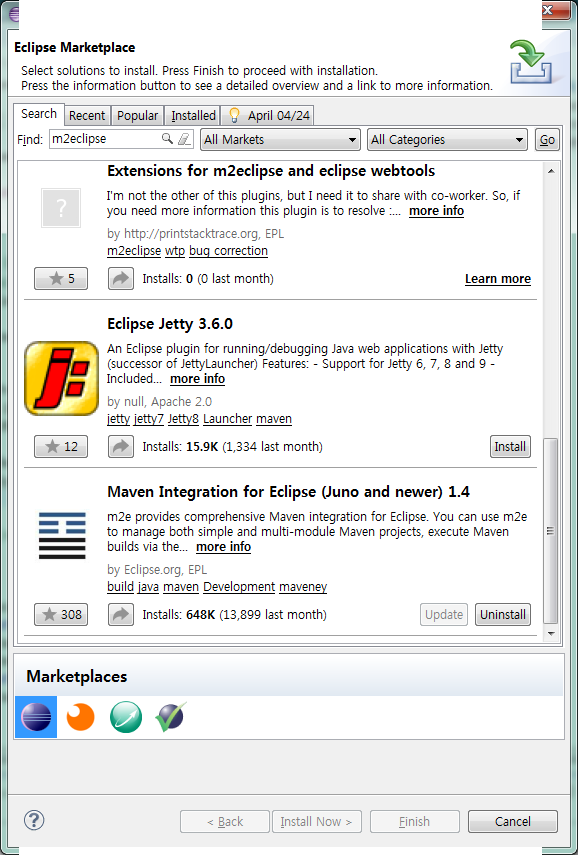

--------------
Maven 이란?
--------------
프로젝트의 기본 구조를 생성하고,
필요한 패키지를 다운받아 설치하고,
프로젝트를 실행하기 위해서 빌드하는 과정을 자동으로 해주는 도구이다.
많은 jar 파일들을 다운받아서 설치하는 번거로운 일이 자동화되니 편리하다.
spring-framework과 mybatis 프로그래밍을 하려면, 아주 많은 jar 파일을 다운 받
아서 설치해야 할 텐데, maven 도구를 이용하면, 필요한 jar 파일이 자동으로 다운
로드되어 설치되니 편리하다.
-----------------------
maven 설치(Windows)
-----------------------

1. Eclipse 실행
2. Help - Eclipse Marketplace 누른다.
3. 검색창에 m2eclipse 검색한다.
4. 'Maven Intergration for Eclipse x.x' 제목으로 나오며, 최신 버전을 설치하면 된다.
-------------------
maven 설치(Linux)
-------------------
1. maven 받기
2. maven 설치
OS] su -
OS] cd /usr/local
OS] mkdir apache-maven
OS] cd apache-maven
OS] mv /home/oracle/Desktop/apache* /usr/local/apache-maven
OS] tar xvzf apache-maven-3.2.1-bin.tar.gz
2. 환경변수 설정
OS] cd
OS] vi .bash_profile
export MAVEN_HOME=/user/local/apache-maven/apache-maven-3.2.1
M2=$M2_HOME/bin
PATH=$M2:$PATH
3. 설치경로&버전 확인
OS] mvn -version